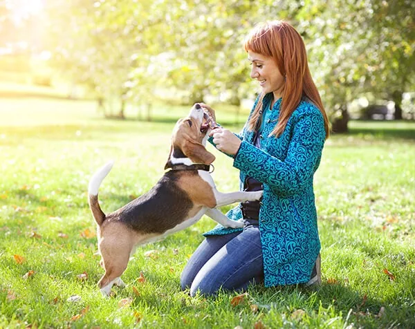
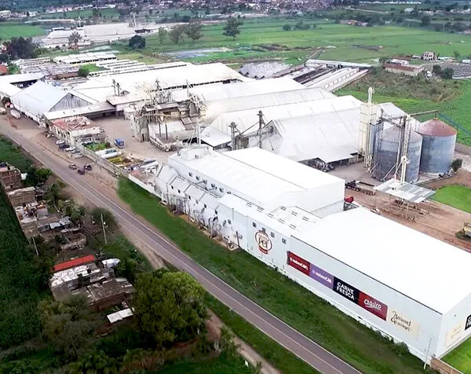
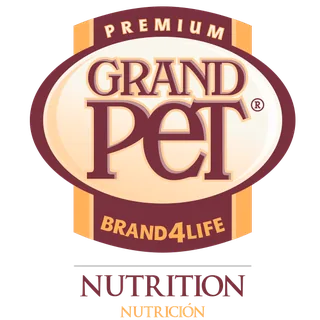
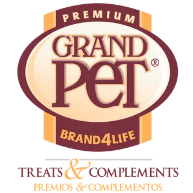
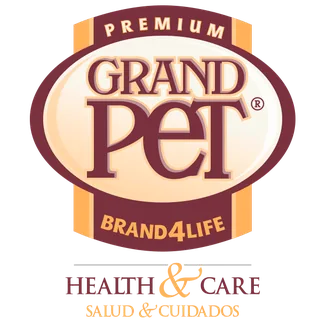

Fundada y ubicada en Guanajuato, somos una empresa familiar 100% mexicana
GrandPET® nace ante la importancia que han generado las mascotas en nuestras familias, constituyéndose como una de las empresas más importantes en la nutrición de las mascotas en nuestro país.


Nuestra pasión son las mascotas
Estamos comprometidos a elevar su calidad de vida, para que trascienda en la nuestra. Elaboramos y comercializamos nuestras marcas de alimento cubriendo todas las etapas de tu mascota, priorizando su desarrollo y bienestar.
Ofrecemos ese plus para que cada ocasión sea diferente, agregando a la dieta de tu mascota premios naturales, y contamos con innovación para crear más productos para que tus mascotas, como miembros de tu familia, tengan una vida más plena y sana.
Nuestra filosofía
Misión
Mejorar la calidad de vida de las mascotas para crear felicidad.
Visión
Ser la tercera empresa nacional en ventas de alimentos, lograr la internacionalización y transformar el mercado de las mascotas ofreciendo la línea más completa de productos y servicios.
Elaboración de alimentos
Cubriendo todos los sectores en el mercado de alimento para perro, con tecnología única que nos permite innovar en nuestros productos.
Nuestros valores
- Respeto
- Perseverancia
- Honestidad
- Servicio
- Trabajo en equipo
- Fe
- Humildad
- Amor

Nuestra planta
Nos permite crear productos innovadores y exquisitos. Solo creamos productos que logren proporcionar un óptimo desarrollo integral, siempre respaldados por la más alta tecnología disponible para desarrollar productos de vanguardia.
GrandPET® está certificado en FSSC 22000, un sistema de gestión de seguridad alimentaria. Número de certificado MEXF-0028.
Buscando el cuidado total de tu mascota
Trabajamos con el compromiso por la innovación y los procesos, apoyados en un gran grupo humano. GrandPET se divide en tres divisiones:

GrandPET Nutrición
Nuestras marcas de alimento, cubriendo todas las etapas de tu mascota.
Ver alimento →
Premios & Complementos
Premios naturales y complementos para que cada ocasión sea diferente.
Ver premios →
Salud & Cuidados
Higiene, belleza y accesorios para su cuidado diario.
Ver accesorios →
¿Quieres distribuir GrandPET?
Distribuidores, veterinarios, forrajeras y tiendas: escríbenos y uno de nuestros agentes te contactará.